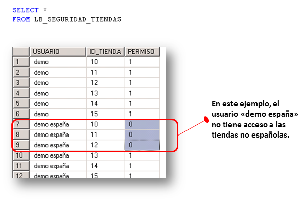
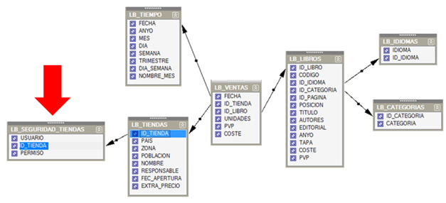
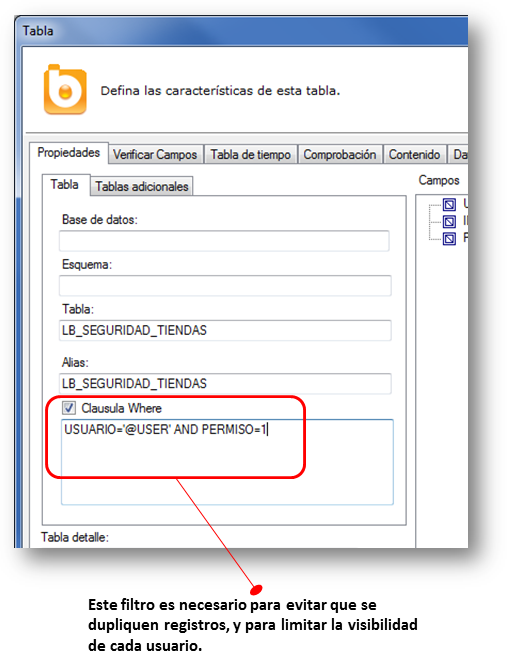
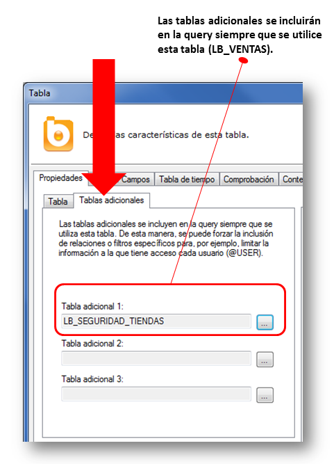
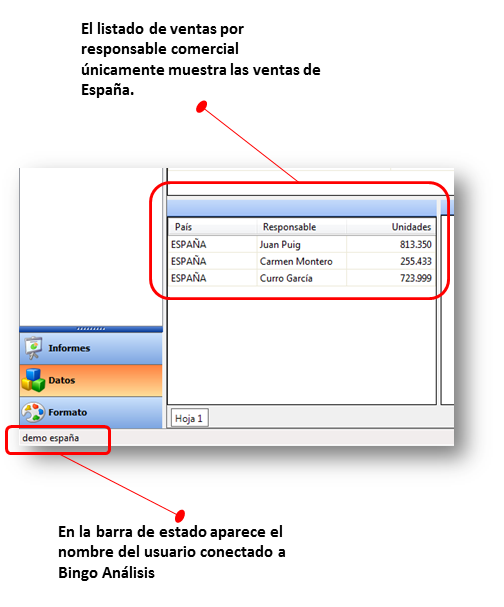

Tablas adicionales
Desde el Diseñador de catálogos es posible forzar la inclusión de determinadas tablas en las consultas SQL generadas. Esta opción es útil para obligar que se apliquen determinados filtros o determinadas relaciones.
Esta funcionalidad permite, por ejemplo, definir una política de “Seguridad horizontal”. La seguridad horizontal se utiliza para limitar los registros a los que tiene acceso cada usuario. De esta manera, se puede configurar que cada responsable comercial sólo acceda a sus propias tiendas, o que los Product Manager sólo vean las ventas de sus productos.
Definir una política de seguridad horizontal
Para aplicar la seguridad horizontal, las sentencias SQL generadas incluirán siempre un filtro que seleccione aquellos registros a los que tiene acceso cada usuario. Para ello, se tienen que seguir los siguientes pasos:
- Crear la tabla que definirá la visibilidad de cada usuario
- Incluir esa tabla en el diagrama de tablas
- Forzar la inclusión de dicha tabla en las consultas generadas
Crear la tabla que define la visibilidad de cada usuario
Para definir la seguridad horizontal es necesario que exista en la base de datos una tabla de seguridad que defina la visibilidad de cada usuario:

En este caso, se ha preparado una tabla que contiene el cruce de todos los usuarios y todas las tiendas, y un campo indicando si se tiene acceso o no.
Incluir la tabla de seguridad en el diagrama
La anterior tabla se debe incluir en el diagrama, y se debe relacionar con la tabla que se quiere filtrar.

En la tabla LB_SEGURIDAD_TIENDAS el campo ID_TIENDA no es único, por lo que se producirán duplicados al hacer la relación con la tabla de tiendas. Para evitar esto, es necesario establecer un filtro sobre la tabla de seguridad. Este filtro es el que finalmente definirá la visibilidad de cada usuario. Para ello, se debe definir el campo WHERE desde el formulario de propiedades de las tabla:

El parámetro @USER se sustituirá por el nombre del usuario conectado a Bingo Intelligence.
Forzar la inclusión de la tabla de seguridad en las consultas
El filtro definido anteriormente sólo se incluirá en las consultas que hagan referencia a la tabla de seguridad (LB_SEGURIDAD_TIENDAS). Por lo tanto, de alguna manera, se ha de indicar cuándo se debe incluir esa tabla. Para ello, se utilizan las “Tablas adicionales”.
En este ejemplo protegeremos la información de “ventas”. Es decir, dejaremos que los usuarios puedan consultar el listado de las tiendas de la organización, pero no permitiremos que tengan acceso a sus ventas. Esto se puede hacer desde las propiedades de la tabla de hechos (LB_VENTAS), en la pestaña “Tablas adicionales”:

De esta manera, siempre que se incluya un indicador o una dimensión que haga referencia a la tabla de ventas, se incluirá automáticamente la tabla de seguridad (y el filtro de seguridad).
Verificación de la seguridad horizontal
Una vez configurada la tabla de seguridad conviene verificar que los filtros se aplican correctamente. Para ello, podemos utilizar el probador de consultas, o podemos crear un informe contra este catálogo. En ese caso, nos hemos conectado con el usuario “demo españa”, y hemos realizado un pequeño informe:
